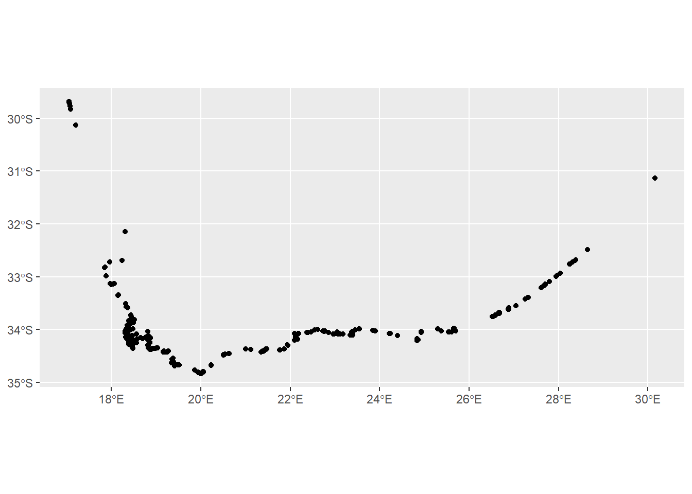
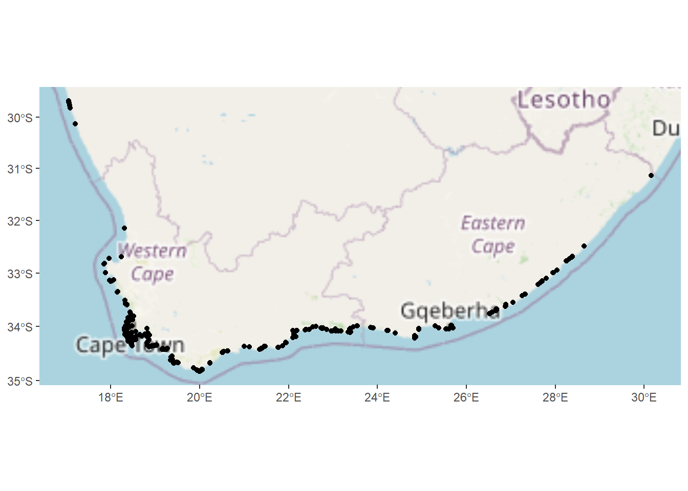
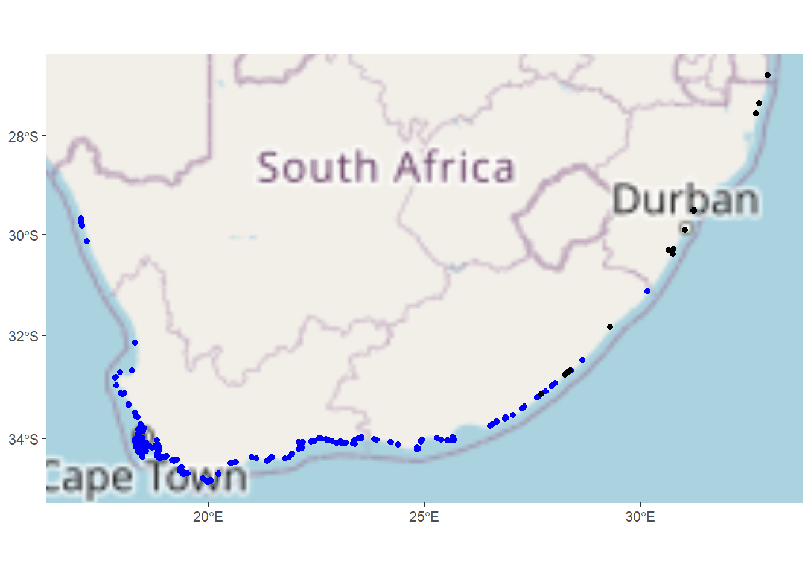

rm(list = ls())
setwd("C:/Users/Adele/Desktop/Honours/3. Reproducible Research_Jasper/GIS_SeaUrchin/GIS_SeaUrchin")Distribution of two sea urchin species: Parechinus angulosus and Tripneustes gratilla
My honours project is focused on the Cape Sea Urchin (Parechinus angulosus). Little is known about the diseases that affect these organisms and since research is looking into these sea urchins for potential aquaculture species, it is important to know where they occur along South Africa’s coastline.
This GIS looks at the distribution of this species as well as the distribution of another sea urchin species, the Collector Sea Urchin (Tripneustes gratilla). The Collector Sea Urchin is already integrated into aquaculture with abalone, providing the abalone with feed. In this GIS, I will see where their distributions overlap.
Set Working Directory
Packages
# Install these packages into the console
# install.packages("rinat")
# install.packages("ggplot2")
# install.packages("maps")
# install.packages("sf")
# install.packages("tidyverse")
# install.packages("rosm")
# install.packages("ggspatial")
# install.packages("leaflet")
# install.packages("htmltools")
# install.packages("mapview")
# install.packages("leafpop")
library(rinat)
library(ggplot2)
library(maps)
library(sf)Linking to GEOS 3.11.2, GDAL 3.8.2, PROJ 9.3.1; sf_use_s2() is TRUElibrary(tidyverse)── Attaching core tidyverse packages ──────────────────────── tidyverse 2.0.0 ──
✔ dplyr 1.1.4 ✔ readr 2.1.5
✔ forcats 1.0.0 ✔ stringr 1.5.1
✔ lubridate 1.9.3 ✔ tibble 3.2.1
✔ purrr 1.0.2 ✔ tidyr 1.3.1── Conflicts ────────────────────────────────────────── tidyverse_conflicts() ──
✖ dplyr::filter() masks stats::filter()
✖ dplyr::lag() masks stats::lag()
✖ purrr::map() masks maps::map()
ℹ Use the conflicted package (<http://conflicted.r-lib.org/>) to force all conflicts to become errorslibrary(rosm)
library(ggspatial)
library(leaflet)
library(htmltools)
library(mapview)
library(leafpop)Calling Data From iNaturalist
pa <- get_inat_obs(taxon_name = "Parechinus angulosus",
bounds = c(-35.12, 15.94, -21.69, 33.20),
maxresults = 2000)
# These bounds are for the South African coast
#View the first few rows of data
head(pa) scientific_name datetime description
1 Parechinus angulosus 2026-02-19 14:45:44 +0200
2 Parechinus angulosus 2026-02-17 12:53:38 +0200
3 Parechinus angulosus 2026-02-17 11:42:04 +0200
4 Parechinus angulosus 2026-02-15 11:28:00 +0200
5 Parechinus angulosus 2026-02-15 08:47:00 +0200
6 Parechinus angulosus 2026-02-13 11:17:00 +0200
place_guess latitude
1 Western Cape, ZA -34.19436
2 Table Mountain National Park, Cape Point, Western Cape, ZA -34.29676
3 South Africa -33.69209
4 Overberg District Municipality, South Africa -34.35322
5 Western Cape, ZA -33.95463
6 Garden Route District Municipality, South Africa -34.03867
longitude tag_list common_name
1 18.44837 Cape sea urchin
2 18.46691 Cape sea urchin
3 26.67407 Cape sea urchin
4 18.98007 Cape sea urchin
5 18.37535 Cape sea urchin
6 23.38000 Cape sea urchin
url
1 https://www.inaturalist.org/observations/339287142
2 https://www.inaturalist.org/observations/339044816
3 https://www.inaturalist.org/observations/339014405
4 https://www.inaturalist.org/observations/338851291
5 https://www.inaturalist.org/observations/338753908
6 https://www.inaturalist.org/observations/338570487
image_url
1 https://static.inaturalist.org/photos/617182216/medium.jpg
2 https://inaturalist-open-data.s3.amazonaws.com/photos/616679402/medium.jpg
3 https://inaturalist-open-data.s3.amazonaws.com/photos/616620128/medium.jpg
4 https://inaturalist-open-data.s3.amazonaws.com/photos/616302072/medium.jpg
5 https://inaturalist-open-data.s3.amazonaws.com/photos/616105673/medium.jpg
6 https://inaturalist-open-data.s3.amazonaws.com/photos/615747530/medium.jpg
user_login id species_guess iconic_taxon_name taxon_id
1 larryap 339287142 Cape sea urchin Animalia 553172
2 jtrope 339044816 Cape sea urchin Animalia 553172
3 galpinmd 339014405 pumpkin shell Animalia 553172
4 diederik_7 338851291 Cape sea urchin Animalia 553172
5 nosilla 338753908 Cape sea urchin Animalia 553172
6 kareneichholz 338570487 pumpkin shell Animalia 553172
num_identification_agreements num_identification_disagreements
1 2 0
2 2 0
3 1 0
4 2 0
5 1 0
6 1 0
observed_on_string observed_on time_observed_at time_zone
1 2026-02-19 14:45:44 2026-02-19 2026-02-19 12:45:44 UTC Pretoria
2 2026-02-17 05:53:38-05:00 2026-02-17 2026-02-17 10:53:38 UTC Pretoria
3 2026-02-17 11:42:04 2026-02-17 2026-02-17 09:42:04 UTC Pretoria
4 2026/02/15 11:28 AM 2026-02-15 2026-02-15 09:28:00 UTC Pretoria
5 2026-02-15 08:47:00+02:00 2026-02-15 2026-02-15 06:47:00 UTC Pretoria
6 2026/02/13 11:17 AM 2026-02-13 2026-02-13 09:17:00 UTC Pretoria
positional_accuracy public_positional_accuracy geoprivacy taxon_geoprivacy
1 3 3
2 13 13
3 NA NA
4 3 3
5 8 8
6 2 2
coordinates_obscured positioning_method positioning_device user_id
1 false 3504617
2 false 5221208
3 false gps gps 3150286
4 false 6529287
5 false 1471785
6 false 1668995
user_name created_at updated_at quality_grade
1 phfla 2026-02-19 12:46:38 UTC 2026-02-27 12:53:20 UTC research
2 2026-02-17 16:30:17 UTC 2026-02-27 12:53:21 UTC research
3 2026-02-17 10:44:51 UTC 2026-02-27 12:53:22 UTC research
4 Di Boonman 2026-02-16 08:14:16 UTC 2026-02-27 12:53:23 UTC research
5 AllyP 2026-02-15 18:44:39 UTC 2026-03-02 15:45:00 UTC research
6 Karen Eichholz 2026-02-14 15:14:43 UTC 2026-02-27 12:53:25 UTC research
license sound_url oauth_application_id captive_cultivated
1 NA 843 false
2 CC-BY-NC NA 3 false
3 CC-BY-NC NA 2 false
4 CC-BY-NC NA NA false
5 CC0 NA 3 false
6 CC-BY NA NA falseFiler the Data based on attributes
# Positional accuracy less than 50m, wild populations, research grade observations
pa <- pa %>% filter(positional_accuracy<50 &
latitude<0 &
!is.na(latitude) &
captive_cultivated == "false" &
quality_grade == "research")
class(pa)[1] "data.frame"Converting the Dataframe into a Spatial Object
pa <- st_as_sf(pa, coords = c("longitude", "latitude"), crs = 4326)
# Check what class it is now
class(pa)[1] "sf" "data.frame"Basic Plot
ggplot() + geom_sf(data = pa)
Making the Plots Pretty
# Adding basemaps to plots
ggplot() +
annotation_map_tile(type = "osm", progress = "none") +
geom_sf(data = pa)
Make the Map Interactive
leaflet() %>%
# Add default OpenStreetMap map tiles
addTiles(group = "Default") %>%
# Add our points
addCircleMarkers(data = pa,
group = "Parechinus angulosus",
radius = 3,
color = "green") # Add popup labels to inspect the data
mapview(pa,
popup =
popupTable(pa,
zcol = c("user_login", "captive_cultivated", "url")))# Make the link clickable
lpa <- pa %>%
mutate(click_url = paste("<b><a href='", url, "'>Link to iNat observation</a></b>"))
mapview(pa,
popup =
popupTable(lpa,
zcol = c("user_login", "captive_cultivated", "click_url")))Intersect the Distribution of Tripneustes gratilla with Parechinus angulosus
#Call the data directly from iNat
tg <- get_inat_obs(taxon_name = "Tripneustes gratilla",
bounds = c(-35.12, 15.94, -21.69, 33.20),
maxresults = 2000)
#Filter returned observations by a range of attribute criteria
tg <- tg %>% filter(positional_accuracy<50 &
latitude<0 &
!is.na(latitude) &
captive_cultivated == "false" &
quality_grade == "research")
#See how many records we got
nrow(tg)[1] 38Convert into Spatial Object
There are considerably less records of The Collector Sea Urchin species in South Africa.
tg <- st_as_sf(tg, coords = c("longitude", "latitude"), crs = 4326)Plot the Intersection
ggplot() +
annotation_map_tile(type = "osm", progress = "none") +
geom_sf(data = pa, colour = "blue") +
geom_sf(data = tg)
See if they intersect at all
st_intersects(pa, tg) %>% unlist()[1] 37They do intersect!
Make the plot interactive
# Bind the two datasets together
both_urchins <- rbind(
pa %>% mutate(species = "Parechinus angulosus"),
tg %>% mutate(species = "Tripneustes gratilla")
)
# Create the interactive map
leaflet() %>%
addTiles() %>% # Default OpenStreetMap
addCircleMarkers(data = both_urchins,
radius = 3,
color = ~ifelse(species == "Parechinus angulosus",
"blue",
"red"),
popup = ~paste("Species:", species, "<br>",
"Observer:", user_login, "<br>",
"Captive:", captive_cultivated, "<br>",
"<a href='", url, "'>iNat link</a>"))